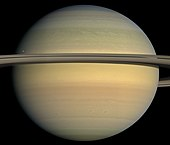

| Name | Mass (1024kg) |
Diameter (Km) |
Density (kg/m3 |
Gravity (m/s2) |
Length of day (hours) |
Distance from Sun (106km) |
Mean temperature (°C) |
Number of moons |
Notes | Image |
|---|---|---|---|---|---|---|---|---|---|---|
| Mercury | 0.330 | 4,879 | 5427 | 3.7 | 4222.6 | 57.9 | 167 | 0 | Closest to the Sun |
 |
| Venus | 4.87 | 12,104 | 5243 | 8.9 | 2802.0 | 108.2 | 464 | 0 |  |
|
| Earth | 5.97 | 12,756 | 5514 | 9.8 | 24.0 | 149.6 | 15 | 1 | Our world |  |
| Mars | 0.642 | 6,792 | 3933 | 3.7 | 24.7 | 227.9 | -65 | 2 | The red planet |
 |
| Jupiter | 1898 | 142,984 | 1326 | 23.1 | 9.9 | 778.6 | -110 | 67 | The largest planet |
 |
| Saturn | 586 | 120,536 | 687 | 9.0 | 10.7 | 1433.5 | -140 | 62 |  | |
| Uranus | 86.8 | 51,118 | 1271 | 8.7 | 17.2 | 2872.5 | -195 | 27 |  |
|
| Neptune | 102 | 49,528 | 1638 | 11.0 | 16.1 | 4495.1 | -200 | 14 |  |
|
| Pluto | 0.0146 | 2,370 | 2095 | 0.7 | 153.3 | 5906.4 | -225 | 5 | Declassified as a planet in 2006, but this remains controversial. |
 |